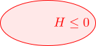
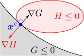

曲がった床の上を、滑ったり転がったりしている剛体の運動方程式を求めたい。
運動方程式(1)の拘束力 𝒇c と拘束トルク 𝝉cg を求めたい
床の上で運動する剛体の運動を計算したい。剛体に課せられる拘束条件としては、「滑り拘束（＝摩擦なく滑る）」と「転がり拘束（＝摩擦が働き、全く滑らずに転がる）」を考える。
運動方程式を求めれ場良いわけだが、そのための戦略として2種類が考えられる。1つ目は、前章のように自由な速度を求め、その速度に対する運動方程式を立てる方法。2つ目は、拘束の無い剛体の運動方程式（第11章の11.1節）に、拘束力の総和
𝒇c
と拘束トルク
𝝉cg
を加えたもの：（添え字
g
は重心を基準にしていることを表す）
𝑚¨𝒙g=𝒇+𝒇c𝑑𝑑𝑡(𝐼g𝝎)=𝝉g+𝝉cg⎫{
{⎬{
{⎭(1)
を用いる方法である。
𝒇c,𝝉cg
を求めれば、運動方程式が確定することになる。
今考えている状況では、拘束を受ける点（＝床と接触している点）が時々刻々変わるので、1つ目の方法は難しそうである。よって、式(1)を用いる2つ目の方法を採用しよう。
即ち、
𝒇c,𝝉cg
を求めることが目的となる。そのためには第8章と同様に、拘束条件を式で表してやればよい。そうすれば、ダランベールの原理から拘束力が決まり、
𝒇c,𝝉cg
も決まることになる。
従って、議論すべきは、拘束条件から
𝒇c,𝝉cg
を求める公式の導出と、床の上を運動する剛体に課せられた拘束条件の定式化である。この章では、この方針に従って、以下のように4つの節に分けて議論する。13.1拘束条件が追加された剛体の運動方程式13.2剛体と床が接しているための条件13.3滑り拘束13.4転がり拘束
13.1拘束条件が追加された剛体の運動方程式
計算を見やすくするため、運動方程式(1)を以下のようにまとめておく：
𝑑𝑑𝑡(𝜇𝛀)=𝚽+𝚽c(2)
ただし、各々の記号は以下のように定義している：
𝜇≡[𝑚00𝐼g],𝛀≡[˙𝒙g𝝎],𝚽≡[𝒇𝝉g],𝚽c≡[𝒇c𝝉cg]
運動方程式を決めるためには、
𝚽c
（これも拘束力と呼ぶことにする）を求めればよい。重心を基準にしているので
𝜇
などは
𝜇g
のように書いたほうがよいが、見づらいので省略している。
この節では、剛体に拘束条件を課した時の拘束力
𝚽c
を一般的に求め、その場合の運動方程式(11)を導く。これにより、後の節で滑り・転がりの場合の拘束条件を求めれば、運動方程式が確定する。
13.1.1剛体の速度 𝛀 に対する拘束条件の一般形：式(6)
まず、剛体の速度
𝛀
に対する拘束条件が、どのような形で与えられるかを考える。一般に、座標
𝑿
に対する拘束条件の場合は
𝑮(𝑡,𝑿)=𝟎(3)
の形で与えられる。速度
˙𝑿
に対する条件は、これを
𝑡
で微分したもの：
𝜕𝑮𝜕𝑿˙𝑿+𝜕𝑮𝜕𝑡=𝟎(4)
である。
剛体の場合、
˙𝑿
は質点要素の速度である。
˙𝑿
と剛体の速度
𝛀
の関係式は、ある行列
𝐴
を用いて
˙𝑿=𝐴𝛀(5)
の形で書ける（第11章の【11.1-注1】）。そこで、この関係式を式(4)に代入して得られる
𝐵𝛀+𝒃=𝟎(6)
の形の式が、
𝛀
に対する拘束条件の一般系だと仮定しよう。拘束条件が時間に依存しない場合には、式(4)の場合と同様に、
𝒃=𝟎
となるだろう。速度の式(6)は、座標の式(3)が存在することを前提として導いた。しかし、この2つは等価ではない。詳しくはこの節の最後の【13.1-注2】で述べるが、例えば、転がり拘束の場合、拘束条件は速度の式(6)の形で書けるにもかかわらず、座標の式(3)の形にすることはできない（存在しない）。即ち、速度に対する拘束条件(6)は、座標の式(3)よりも広いものとなっている。
13.1.2ダランベールの原理(9)により、運動方程式は式(11)
拘束条件(6)から拘束力
𝚽c
を導くには、ダランベールの原理（第8章の8.2節）を適用すればよい。ダランベールの原理とは「拘束面と拘束力が垂直になる」というものであった。拘束面は、「時間依存性を無視した時の拘束条件」を満たす速度
˙𝑿
で張られる空間である。
今の場合、拘束面は、式(6)で時間依存性を除いた
𝐵𝛀=𝟎
を満たす
˙𝑿
が張る空間である。この式を
˙𝑿
の関係式にするには、式(5)の両辺に
𝐵(𝐴T𝐴)−1𝐴T
を左乗するだけである：
𝐵(𝐴T𝐴)−1𝐴T˙𝑿=𝐵𝛀=𝟎(7)
よってダランベールの原理により、拘束条件(6)による拘束力
𝑭c𝐵
は、この式(7)を満たす全ての
˙𝑿
と垂直になる。即ち、ある未定乗数
𝝀
を用いて、以下のように書ける：
𝑭c𝐵=𝐴(𝐴T𝐴)−T𝐵T𝝀(8)
垂直という条件
(𝑭c𝐵)T˙𝑿=0
を満たすことは実際に上式を代入すれば分かる。
𝐴−T
という記号は、
(𝐴−1)T
および
(𝐴T)−1
の略記である（両方とも同じ値になる）。
次に、式(8)を、式(2)の拘束力
𝚽c
の形にする必要がある。これは、第11章の11.1節で
𝚽
を求めたときと同様に、
𝐴T
を左乗すればよい：
𝚽c=𝐴T𝑭c𝐵=𝐵T𝝀(9)
これが、剛体に拘束条件を追加した時のダランベールの原理である。
後は、
𝝀
を求めれば、拘束力
𝚽c
が確定する。その方法は第8章の場合と同様で、運動方程式(2)と拘束条件(6)を連立するだけである。実際に計算すると、求める運動方程式は、以下の【13.1-注1】のようになる。
【13.1-注1】拘束された剛体の運動方程式：式(11)
剛体に、速度
𝛀
に対する拘束条件
𝐵𝛀+𝒃=𝟎(10)
が課せられているとする。この時、剛体の運動方程式は以下のようになる：
𝑑𝑑𝑡(𝜇𝛀)=𝚽+𝐵T𝝀𝝀≡−(𝐵𝜇−1𝐵T)−1[˙𝐵𝛀+˙𝒃+𝐵𝜇−1(𝚽−˙𝜇𝛀)](11)(12)
なお、
˙𝜇𝛀
は以下のように書ける：（第11章の【11.1-注3】）
˙𝜇𝛀=[0𝝎×𝐼g𝝎]
導出
ダランベールの原理(9)を運動方程式(2)に代入すれば、式(11)の形になる。後は、未定乗数
𝝀
が式(12)になることを示せばよい。
𝝀
は、拘束条件(10)から決まる。即ち、運動方程式(11)の左辺の時間微分を実行したもの：
˙𝜇𝛀+𝜇˙𝛀=𝚽+𝐵T𝝀∴˙𝛀=𝜇−1(𝚽+𝐵T𝝀−˙𝜇𝛀)
を、拘束条件(10)の時間微分：
˙𝐵𝛀+𝐵˙𝛀+˙𝒃=𝟎
に代入して
˙𝛀
を消去すればよい。その式を
𝝀=[⋯]
の形に変形すれば、式(12)になる。
◼
13.1.3初期値に対する拘束条件には要注意
運動方程式(11)が得られたので、初期値を与えれば運動を計算することができる。初期値は、拘束条件を満たすように取っておく必要があるが、これがなかなかに厄介である。初期値さえ拘束条件を満たしていれば、運動方程式(11)の解は、自動的に拘束条件を満たし続ける。
まず、
𝑡=0
における初期速度
𝛀
は、もちろん拘束条件(10)を満たさなければならない。しかし、これだけではない。一般に、拘束条件は
𝛀
だけでなく、剛体の位置
𝒙g
と向き
𝜽
に対しても課されている（例えば床に接しているという条件）。従って、
𝑡=0
における
𝒙g,𝜽
についても、何らかの拘束条件が課されることになる。
もし、拘束条件が、速度
𝛀
を含まない関係式
𝑮(𝑡,𝒙g,𝜽)=𝟎
の形に書けたならば、初期値が満たすべき拘束条件は、第8章のように、
𝑮=˙𝑮=𝟎
である。その場合、拘束条件(10)は
˙𝑮=𝟎
と等価である。問題は、式(10)に対応する
𝑮
が常に存在するとは限らないということである。
𝑮
が存在する場合、拘束条件は可積分であるといい、存在しない場合、非可積分であるという（以下の【13.1-注2】）。非可積分な拘束条件の場合、速度
𝛀
を含んだ形でしか書けず、
𝒙g,𝜽
に対する条件は出ない（式(10)のみとなる）。
従って、式(10)の形で拘束条件が与えられている場合、正しい初期値を与えるためには、その式が可積分かどうかを判定し、可積分であれば、対応する
𝑮=𝟎
という拘束条件を初期条件に追加する必要がある。拘束条件の一部が非可積分という場合もある。13.4節で述べるが、転がり拘束の場合がそうであり、床に接するという条件は可積分だが、転がるという条件は非可積分になる。
【13.1-注2】非可積分な拘束条件
一般に、拘束条件
𝐵˙𝑿+𝒃=𝟎(13)
が、何らかの拘束条件
𝑮(𝑡,𝑿)=𝟎
の時間微分
˙𝑮=𝟎(14)
と等しい時、式(13)は可積分（あるいはホロノミック）であると言う。逆に、
𝑮
が存在しない場合、非可積分（あるいは非ホロノミック）であるという。
可積分性の判定には、第15章の15.3節で述べるフロベニウスの定理を使えばよい。
補足
- 可積分な拘束条件として例えば、
̂𝒙T˙𝒙=𝟎
という拘束条件は、
𝑑𝑑𝑡(|𝒙|−𝑙)=𝟎
と書けるので、可積分である。これは、原点からの距離
𝑙
が一定という拘束条件である。運動を計算する際には、
𝑙
は問題設定の中で与えられているだろう。
- 可積分の場合には、式(14)を満たす
𝑮
を特定したいわけだが、単純に、式(13)と式(14)の左辺同士を見比べて
˙𝑮=𝐵˙𝑿+𝒃
となる
𝑮
を探せばよいというわけではない。というのも、拘束条件(13)には、逆行列を持つ任意の行列値関数
𝑓(𝑡,𝑿)
を両辺に掛ける自由度があるからである。従って、解くべきは
˙𝑮=𝑓(𝑡,𝑿)⋅(𝐵˙𝑿+𝒃)(15)
である。
𝑮
を特定するには、この
𝑓(𝑡,𝑿)
を見つけなければならないので難易度が高い。式(15)と似た式は前にも出てきている。それは、第10章の【10.3-注1】で、角速度
𝝎
に対して、
˙𝜽=𝝎
となるような回転の自由な座標
𝜽
が存在しないことを示した時である。その時は偏微分の可換性を使うだけで
𝜽
の存在を判定できたが、今回の式(15)には未知関数
𝑓
が含まれるため、可積分性の判定はより複雑である。
- 転がり拘束は、非可積分である。簡単のため水平な床を考えよう。転がり拘束下でのボールの運動の自由度は、「鉛直軸周りのスピン」と「前後・左右に転がす操作」の3自由度である。よって、もし転がり拘束が可積分であれば、3つの拘束条件（剛体の自由度
6
－自由度
3
）
𝐺1=𝐺2=𝐺3=0(16)
が存在する。ということは、剛体の位置
𝒙g
と向き
𝜽
の
6
自由度のうち
3
成分を決めれば、残りは式(16)から決まることになる。つまり、剛体の位置を決めれば向きは自動的に決まることになる。しかし、これは現実と矛盾する。実際、床の上でボールを転がしてから元の場所に戻すと、向きが変化することが知られている。よって、可積分ではありえない。
13.2剛体と床が接しているための条件
この節では、剛体と床が接触し続けるために成り立つべき、剛体の速度
˙𝒙g,𝝎
に対する拘束条件(20)を導く。滑り拘束と転がり拘束は両方とも、この条件を満たさなければならない。簡単のため、床と剛体は1点でのみ接しているとする。
13.2.1モデリング：時刻 𝑡 での剛体の形状は式(17)
床の形状を
𝐺(𝑡,𝒙)≤0
で表すことにする（右図）。即ち、これを満たす
𝒙
の集合が床を構成する。
𝑡
に依存しているように書いているのは、時間とともに床が変形してもよいことを表している。

また、モデル位置における剛体の形状を
̃𝐻(𝒙)≤0
で表すことにする。モデル位置は任意であり、床と接触するようにとる必要はない。時刻
𝑡
において、剛体の位置および向きが
𝒙g,𝑅
であるとする（
𝒙g
は重心位置、
𝑅
は回転行列）。この時の剛体の形状
𝐻(𝑡,𝒙)≤0
（右図）は、モデル位置での形状
̃𝐻
を用いて、以下のように書ける：（
̃𝒙g
はモデル位置での剛体の重心）
𝐻(𝑡,𝒙)≡̃𝐻(𝑅T(𝒙−𝒙g)+̃𝒙g)≤0(17)
これを示すには、モデル位置での質点要素
̃𝒙𝑖
が満たす式
̃𝐻(̃𝒙𝑖)≤0
に、時刻
𝑡
での質点要素の位置
𝒙𝑖=𝒙g+𝑅(̃𝒙𝑖−̃𝒙g)
を代入して、
̃𝒙𝑖
を消去すればよい（回転行列の性質
𝑅−1=𝑅T
を使う）。
𝐻
が時間に依存しているように書かれているのは、剛体の運動によって、位置・向きが変わることによるものであり、剛体自体が変形するわけではない。
13.2.2剛体の位置・向き 𝒙g,𝑅 に対する拘束条件：式(18)

この節の目的である、剛体と床が接触しているための条件を考える。剛体と床の接触点を
𝒙c
とおく（右図）。接触は1点のみと仮定する。
𝒙c
が満たす条件は、「
𝒙c
が剛体と床の両方の表面にあり、かつその点での接平面が一致する」ことなので、以下のように書ける：
𝐺=0𝐻=0̂∇𝐺+̂∇𝐻=𝟎⎫{
{⎬{
{⎭(18)
𝐺,𝐻
は、ともに
(𝑡,𝒙c)
での値である。
̂∇𝐺
は
∇𝐺
の大きさを正規化したものである。
∇𝐺,∇𝐻
はそれぞれ
𝐺,𝐻
が大きくなる方向を向くので、右図のように互いに逆を向くことに注意。
式(18)の第3式は、
3
成分であるが、
∇𝐺,∇𝐻
の一方が与えられた時に、他方の向きを決めるだけなので、実際には
2
つの条件しか与えない。よって、式(18)は全体として
4
つの条件を与える。
𝒙c
を決定するには
3
つの条件が必要なので、剛体に対する拘束条件の数は残りの
4−3=1
つとなる。この
1
つが
𝐻
（＝剛体の位置・向き）に対する条件を課し、式(17)を通して剛体の位置・向き
𝒙g,𝑅
に対する拘束条件になっている。例えば、水平な床の上の球を考えると、拘束条件は球の高さを固定する
1
つだけであり、水平方向や回転は自由に動ける。
13.2.3剛体の速度 𝛀 に対する拘束条件(21)
運動方程式を導くには、式(10)の形の拘束条件が必要である。よって、式(18)を、剛体の速度
𝛀
に対する条件にしたい。そのためには、式(18)を時間微分すればよい：（接触点
𝒙c
も時間依存することに注意）
𝜕𝐺𝜕𝑡+(∇𝐺)T˙𝒙c=0𝜕𝐻𝜕𝑡+(∇𝐻)T˙𝒙c=0(𝜕̂∇𝐺𝜕𝑡+𝜕̂∇𝐻𝜕𝑡)+(𝜕̂∇𝐺𝜕𝒙+𝜕̂∇𝐻𝜕𝒙)˙𝒙c=𝟎⎫{
{
{
{
{⎬{
{
{
{
{⎭(19)
𝐻
の時間微分には
𝛀
が含まれているので、この式は、接触点の速度
˙𝒙c
に対する条件であると同時に、
𝛀
に対する拘束条件にもなっている。上述の通り、
𝐻
の時間依存性は、剛体の位置・向きの変化、即ち、
𝒙g,𝑅
の時間依存性によるものである。
この式(19)は、
𝛀
に対する拘束条件と
˙𝒙c
に対する条件式が合わさったものなので、
˙𝒙c
を消去することを考える。これは簡単で
式(19)の第1式|∇𝐺|+同第2式|∇𝐻|
に、式(18)の第3式を代入すればよい：
1|∇𝐺|𝜕𝐺𝜕𝑡+1|∇𝐻|𝜕𝐻𝜕𝑡=0(20)
これが
𝛀
に対する拘束条件であり、式(10)（
𝐵𝛀+𝒃=𝟎
）の形に変形すると、以下の【13.2-注1】の式(21)のようになる。
【13.2-注1】床との接触条件
床と剛体が接触し続けている時、剛体の速度
𝛀
に対する拘束条件は、以下のようになる：
𝐵𝛀+𝑏=0𝐵≡(∇𝐺)T[1−(𝒙c−𝒙g)×]𝑏≡𝜕𝐺𝜕𝑡⎫{
{
{⎬{
{
{⎭(21)
床の形状は
𝐺≤0
で与えられ、
𝒙c
は剛体と床の接触点である。特に、床が静止している場合（
𝑏=0
）、この式は、接触点における「剛体の質点要素の速度
[⋯]𝛀
」が、
∇𝐺
と垂直、即ち、拘束面と平行になっていることを意味しており、直感的にも自然である（そうでなかったら、めり込んだり離れたりしてしまう）。
導出
本文中で求めた
𝛀
に対する拘束条件(20)：（再掲）
1|∇𝐺|𝜕𝐺𝜕𝑡+1|∇𝐻|𝜕𝐻𝜕𝑡=0(22)
を変形するだけである。この式の
𝜕𝐻𝜕𝑡
の中に含まれている
𝛀
を表に出す必要がある。そのためには、
𝐻
と
̃𝐻
の関係式(17)：（再掲）
𝐻(𝑡,𝒙)≡̃𝐻(𝑅T(𝒙−𝒙g)+̃𝒙g⏟___⏟___⏟≡̃𝒙)
を使えばよい。この式の両辺の
𝑡
微分および
𝒙
微分を取ると、それぞれ以下のようになる：（
𝜕𝜕𝑡
が
𝑅,𝒙g
だけに作用することに注意）
𝜕𝐻𝜕𝑡=𝜕̃𝐻𝜕̃𝒙𝜕̃𝒙𝜕𝑡∣
∣
∣
∣
∣
∣𝜕̃𝒙𝜕𝑡=𝜕𝜕𝑡[𝑅T(𝒙−𝒙g)+̃𝒙g]=˙𝑅T(𝒙−𝒙g)+𝑅T(𝟎−˙𝒙g)+𝟎=−𝑅T[𝝎×(𝒙−𝒙g)+˙𝒙g]∵˙𝑅=𝝎×𝑅=−𝑅T[1−(𝒙−𝒙g)×]𝛀=−𝜕̃𝐻𝜕̃𝒙𝑅T[1−(𝒙−𝒙g)×]𝛀𝜕𝐻𝜕𝒙=𝜕̃𝐻𝜕̃𝒙𝜕̃𝒙𝜕𝒙⏟𝑅T
後は、第1式に、第2式を代入して
̃𝐻
部分を消去すると
𝜕𝐻𝜕𝑡=−(∇𝐻)T[1−(𝒙−𝒙g)×]𝛀(23)
となる。拘束条件(22)は
𝒙=𝒙c
の時に成立する式なので、式(23)において
𝒙=𝒙c
としたものを式(22)を代入すれば、与式を得る。（式(18)の第3式
̂∇𝐺+̂∇𝐻=𝟎
を使って
∇𝐻
を
∇𝐺
で置き換える。）
◼
13.2.4接触点 𝒙c の速度(24)
拘束条件(19)は、接触点
˙𝒙c
を決める式でもある。実際に
˙𝒙c
を求めよう。
同式の第3式は3成分の式なので、逆行列をかけて
˙𝒙c=[⋯]
の形に変形できればよいが、それはできない。実際、同式に現れる単位ベクトルの微分には、「その単位ベクトルと直交する面」への射影行列が含まれるため（第8章の【8.3-注1】）、ある
˙𝒙c
が解であるとき、
˙𝒙c
に「
∇𝐺
に平行なベクトル」を加えたものも再び解になってしまい一意的には決まらない。
よって、
˙𝒙c
を求めるには、拘束条件(19)の第3式と、式(19)の別の1つの式を連立する必要がある。例えば、第1式に
∇𝐺
をかけた
∇𝐺[𝜕𝐺𝜕𝑡+(∇𝐺)T˙𝒙c]=0
を同第3式に辺々加えると
(𝜕̂∇𝐺𝜕𝒙+𝜕̂∇𝐻𝜕𝒙+∇𝐺(∇𝐺)T)˙𝒙c=−(𝜕̂∇𝐺𝜕𝑡+𝜕̂∇𝐻𝜕𝑡+𝜕𝐺𝜕𝑡∇𝐺)
となる。
˙𝒙c
にかかる行列は、
∇𝐺
にかけてもゼロにならなくなるので、可逆になり、
˙𝒙c
が求まる：
˙𝒙c=−𝐾−1(𝜕̂∇𝐺𝜕𝑡+𝜕̂∇𝐻𝜕𝑡+𝜕𝐺𝜕𝑡∇𝐺)𝐾≡𝜕̂∇𝐺𝜕𝒙+𝜕̂∇𝐻𝜕𝒙+∇𝐺(∇𝐺)T(24)
以上により、速度に関する拘束条件(19)を、「1つの拘束条件(21)」と「
˙𝒙c
を与える3成分の式(24)」に過不足なく分離することができた。
13.3滑り拘束
この節では、滑り拘束に対する運動方程式の解き方をまとめる。それを用いて、具体的な数値計算を行う。前述のように、今考えているのは、常に1点で接触している状況である。接触点が複数ある場合、あるいは運動の途中で増える場合（衝突運動になることが多いだろう）は考慮していない。逆に、接触点が減る場合も扱えない。例えば、本来であれば空中に飛び上がってしまうような場合でも、床から離れないようにする拘束力が働いて、床にくっついたままになる。
13.3.1計算方法
剛体が床の上を滑るという拘束条件は、剛体と床が接触しているという前節の条件(21)そのものである。よって、運動方程式(11)はすでに確定している。数値的に計算する方法をまとめると、以下のようになる：
モデル設定
まず、床の形状
𝐺(𝑡,𝒙)
と、モデル位置での剛体の形状
̃𝐻(𝒙)
を定義する。
初期値設定
次に、
𝑡=0
での初期位置
𝒙g,𝑅
を、拘束条件(18)を満たす接触点
𝒙c
が存在するようにとる。初期速度
˙𝒙g,𝛀
については、拘束条件(21)を満たすようにをとる。
運動方程式を解く
その後の運動は、運動方程式(11)から計算できる。その解き方は第11章の11.2節と同じである。ただし、
𝐵,𝒃
およびその時間微分は拘束条件(21)で与えられる（
𝒙c
における値である）。その際に現れる
˙𝒙c
は、式(24)から求められる。
なお、接触点
𝒙c
は、
𝒙g,𝑅
から直接計算することも原理的には可能であるが、ステップ毎に直接計算するのは、一般に困難である。その場合、式(24)の
˙𝒙c
を用いて
𝒙c
の時間変化を同時に計算していけば良い：
𝒙c(𝑡+𝛿𝑡)≐𝒙c+˙𝒙c𝛿𝑡
。
13.3.2【例題】
例として、球を
𝑥,𝑦,𝑧
方向につぶした（あるいは伸ばした）楕円体の剛体：
̃𝐻(𝒙)≡𝑥2𝑎2+𝑦2𝑏2+𝑧2𝑐2−1
を取りあげる（
𝑎,𝑏,𝑐
は定数）。密度は一様とする。このモデル位置での慣性モーメント
̃𝐼g
は、剛体を質点要素に分解して数値的に近似計算してもよいが、今の場合には解析的に計算することができ、以下のようになる：
̃𝐼g=𝑚5⎡⎢
⎢
⎢⎣𝑏2+𝑐2𝑐2+𝑎2𝑎2+𝑏2⎤⎥
⎥
⎥⎦
𝑚
は剛体の質量である。（導出は第14章で行う。）
数値計算を行うと右図のようになる。
13.4転がり拘束
この節では、転がり拘束での拘束条件が、式(25)となることを見る。前節の滑り拘束に、滑らないという拘束条件を加えればよい。具体的な数値計算も行う。
13.4.1拘束条件は式(25)
滑らないということは、接触点
𝒙c
において剛体と床が相対速度を持っていないということである。即ち、「
𝒙c
に位置している剛体上の質点要素
𝒙c,𝐻
」の速度：
˙𝒙c,𝐻=˙𝒙g+𝝎×(𝒙c−𝒙g)
と「
𝒙c
に位置している拘束面上の点
𝒙c,𝐺
」の速度
˙𝒙c,𝐺
が等しいということである：
˙𝒙c,𝐻≡˙𝒙g+𝝎×(𝒙c−𝒙g)=˙𝒙c,𝐺
よって、式(10)の形に変形すると
𝐵𝛀+𝒃=𝟎𝐵≡[1−(𝒙c−𝒙g)×]𝒃≡−˙𝒙c,𝐺⎫{
{⎬{
{⎭(25)
となる。床が静止している場合には、
˙𝒙c,𝐺=𝟎
である。そうでない場合、
˙𝒙c,𝐺
を求めるためには、床の上の各点の速度を与える必要がある。しかし、動く壁との衝突（第5章の5.2節）の際にも述べたが、床を定義する
𝐺≤0
という式の中に、床の水平方向の速度の情報を含めることはできない。そのため、床が動いている場合には、追加でその情報を与えてやる必要がある。
式(25)は、滑り拘束の条件(21)を含んでいる。実際、式(25)の両辺に
∇𝐺T
を左乗すると、式(21)に一致する。よって結局、転がり拘束の場合の計算方法は、滑り拘束の場合の拘束条件(21)を、上式(25)で置き換えるだけである。
剛体の初期位置・向きに対する拘束条件は、床と剛体が接していることのみなので、滑り拘束の場合と同じである。一方、初期速度・角速度に対する拘束条件は式(25)の3つを満たす必要がある。位置・向きに対する条件より、速度・角速度に対する条件のほうが多いので、上述の通り、転がり拘束は非可積分（【13.1-注2】）であることが分かる。
13.4.2【例題】
床が静止している場合、数値計算を行うと右図のようになる。